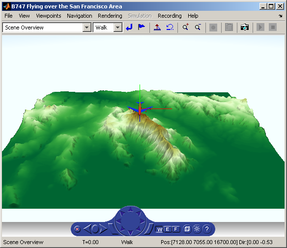

Terrain Visualization
This demonstration illustrates the possibility to convert generally available Digital Elevation Models into VRML format for use in virtual reality scenes.
As a source of terrain data, South San Francisco DEM model included in the Mapping Toolbox™ has been used. A simple pre-created Boeing® 747® model is included in the scene to show the technique of creating virtual scenes from several sources on-the-fly.
This demo requires Mapping Toolbox.
Contents
- Reading DEM Data
- Data Preparation
- Create a Virtual World from the Template
- Create Terrain Node Fields (Shape, Appearance, Material)
- Create the Terrain Texture
- Assign Texture to the VRTerrain Appearance Field
- Add the Airplane to the Virtual Scene
- Determine the Highest Peak in the Terrain Data
- Position the Airplane 200 Meters Above the Peak
- Add the Coordinate System Triad to the Virtual Scene
- Change the Template File WorldInfo Information
- Save the Created World to a New WRL File
- Close and Delete the Virtual World Used to Create the Scene
- Copy Files Inlined in the Created File to the Current Directory
- Open and View the Virtual World File We Have Just Created
- Cleanup
Reading DEM Data
% gunzip the South San Francisco DEM file to a temporary directory filenames = gunzip('sanfranciscos.dem.gz', tempdir); demFilename = filenames{1}; % read every other point of the 1:24,000 DEM file [~, ~, Z] = usgs24kdem(demFilename, 1); % delete the temporary gunzipped file delete(demFilename);
Data Preparation
Manipulation of the data to prepare it for creating virtual world
demdata=Z; [xdim zdim] = size(demdata); xspace = 30; % scaling in meters for x dimension zspace = 30; % scaling in meters for z dimension % reshape the data into a one-dimensional array demdata = demdata(:);
Create a Virtual World from the Template
% bring up template myworld = vrworld('vr_template_terrain.wrl'); % open the virtual world open(myworld); % create a handle to a node VRTerrain, the node that will contain the DEM data Terrain_node = vrnode(myworld,'VRTerrain');
Create Terrain Node Fields (Shape, Appearance, Material)
% create a child of VRTerrain - shape newShape = vrnode(Terrain_node, 'children', 'Terrain_Shape', 'Shape'); % create appearance field for the shape newAppear = vrnode(newShape, 'appearance', 'Terrain_Appearance', 'Appearance'); % create material field for the appearance newMat = vrnode(newAppear, 'material', 'Terrain_Material','Material'); % assign properties for the material field newMat.ambientIntensity = 0.25; newMat.diffuseColor = [0.9 0.6 0.6]; newMat.shininess = 0.078125; newMat.specularColor = [0.0955906 0.0955906 0.0955906]; % create geometry field for the shape newEGrid = vrnode(newShape, 'geometry', 'DEM_EGrid','ElevationGrid'); % assign properties for the geometry field - use DEM data newEGrid.creaseAngle = 3.14; newEGrid.xDimension = xdim; newEGrid.zDimension = zdim; newEGrid.xSpacing = xspace; newEGrid.zSpacing = zspace; newEGrid.height = demdata; newEGrid.ccw = 'TRUE'; % This setting will make the terrain surface visible from both sides newEGrid.solid = 'FALSE';
Create the Terrain Texture
For coloring the terrain texture we will use the DEMCMAP function available in Mapping Toolbox.
% terrain elevation is used to color the image cmap = demcmap(Z, 256); % create texture subdirectory of the current directory % output arguments used only to avoid warning message when the directory % already exists [~, ~] = mkdir('texture'); % scale the height values to use the full colormap range % scaling relies on the fact that this terrain begins at zero height Zscaled = Z .* (size(cmap,1)-1) ./ max(Z(:)); % save the texture into PNG image in the texture subdirectory % rotate the image left to match image orientation needed in VRML model % elements of Zscaled represent indices into cmap imwrite(rot90(Zscaled), cmap, 'texture/sanfrancisco_elev.png');
Assign Texture to the VRTerrain Appearance Field
Texture image file is created by the code above, here it is included in the VRML scene, as a texture field of the terrain Appearance node:
newTexture = vrnode(newAppear, 'texture', 'Terrain_texture','ImageTexture'); newTexture.url = 'texture/sanfrancisco_elev.png';
Add the Airplane to the Virtual Scene
% create a new Transform node, called "Boeing" plane = vrnode(myworld, 'Boeing', 'Transform'); plane_inline = vrnode(plane, 'children', 'Boeing_Inline', 'Inline'); % a simple model of Boeing is prepared in the /vrdemos directory plane_inline.url='b747.wrl';
Determine the Highest Peak in the Terrain Data
ypeak = max(Z(:)); [xmax zmax] = find(Z==ypeak); % use the first peak, if more vertices have the same maximum height % convert matrix indices to meters in x and z directions in VRML xpeak=xspace*(xmax(1)-1); zpeak=zspace*(zmax(1)-1);
Position the Airplane 200 Meters Above the Peak
plane.translation = [xpeak ypeak+200 zpeak]; % scale the size of the airplane by a factor of 20, so that it % is visible in the virtual scene without any extra zooming plane.scale = [20 20 20];
Add the Coordinate System Triad to the Virtual Scene
It is sometimes useful to temporarily include in the scene a triad that can help with the orientation of objects added to the scene. In the /vrdemos directory, there is a "triad.wrl" file for this purpose, that you can inline in your model.
The triad consists of 3 lines (1 meter long) running from one vertex along the x, y and z directions. The lines are coloured as follows: +x - red +y - green +z - blue
If the triad is included in the scene at the top level of the scene hierarchy, it denotes the global scene coordinates. If it is included as a child of a transform node, it denotes the local coordinate system (orientation) of that node in the scene.
% add the triad to the scene at the top level of the hierarchy triad = vrnode(myworld, 'Triad1', 'Transform'); triad_inline = vrnode(triad, 'children', 'Triad_Inline', 'Inline'); triad_inline.url='triad.wrl'; % scale the size of the triad so that it is visible % in the virtual scene without any extra zooming triad.scale = [xdim*xspace/8 min(xdim*xspace/8, zdim*zspace/8) zdim*zspace/8]; % position the triad at the center of Boeing 747 triad.translation=[xpeak ypeak+200 zpeak];
Change the Template File WorldInfo Information
Change the title of the scene to reflect the changes we made
myworld.World_Info.title = 'B747 Flying over the San Francisco Area';
Save the Created World to a New WRL File
save (myworld, 'vrterrain_sanfrancisco.wrl');
Close and Delete the Virtual World Used to Create the Scene
close(myworld); delete(myworld);
Copy Files Inlined in the Created File to the Current Directory
Inlined models are in the vrdemos directory.
Because files are inlined using relative path, we must copy them to the same directory where the newly created scene file exists.
If you copy the terrain model to a different location, don't forget to copy also these files, as well as texture file(s) to be found in the texture subdirectory.
% copy triad.wrl and b747.wrl from /vrdemos to the current directory pt = fileparts(which('vrterrain_simple.m')); copyfile(fullfile(pt, 'triad.wrl'), pwd, 'f'); copyfile(fullfile(pt, 'b747.wrl'), pwd, 'f');
Open and View the Virtual World File We Have Just Created
There are several alternatives how to open a virtual scene file:
% This is how to open a VRML file in the external viewer: % vrview('terrain.wrl', '-web'); % This is how to open a VRML file in the internal viewer: % vrview('terrain.wrl', '-internal'); % This is how to open the VRML file in the default viewer: createdworld = vrview('vrterrain_sanfrancisco.wrl'); % Set Antialiasing on to smooth the terrain texture myfig = get(createdworld,'Figures'); set(myfig, 'Antialiasing', 'on');
Cleanup
This demonstration example created a new virtual model in the working directory.
The newly created virtual scene is left open so that you can explore it.
% clear all used variables clear Terrain_node Z Zscaled cmap createdworld demFilename demdata ex filenames ... id lat lon mess myfig myworld newAppear newEGrid ... newMat newShape newTexture nm ok plane plane_inline pt triad ... triad_inline ve xdim xmax xpeak xspace ypeak zdim zmax zpeak zspace